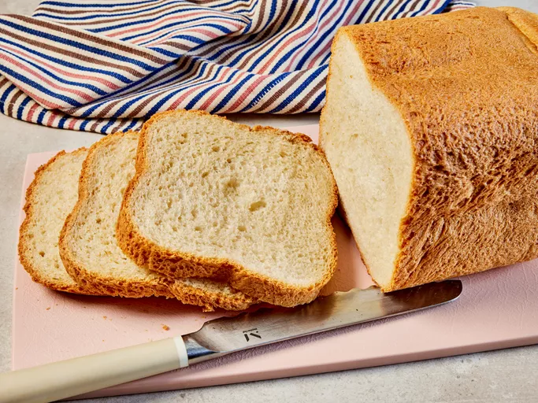

Bread

Description
This bread-machine recipe for whole wheat bread is best served a day after it's prepared.
Ingredients
-
1 ⅛ cups warm water
-
4 tablespoons butter
-
2 cups whole wheat flour
-
1 cup bread flour
-
1 ½ teaspoons salt
-
2 tablespoons white sugar
-
¼ cup potato flakes
-
1 ¼ teaspoons active dry yeast
Steps
-
Step1:Combine water and butter in a bread machine pan. Add, respectively, the whole wheat flour, bread flour, salt, sugar, and potato flakes; top with yeast, assuring yeast and salt do not mix.
-
Step2:Select Whole Wheat cycle; press Start.
-
Step3:Remove loaf from pan to a wire rack to cool.
Home